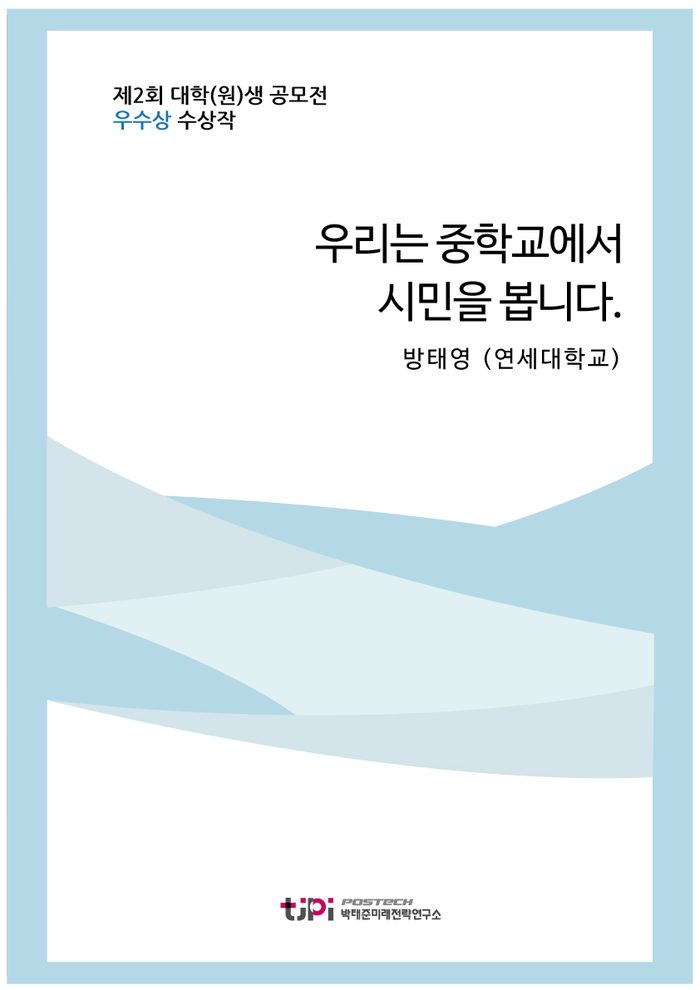

저자 방태영 (연세대학교)보도일 2015-09-01

요 약
2015 대학(원)생 에세이 공모전 우수작
' 우리는 중학교에서 시민을 봅니다. 중학생의 시민성 함양을 위한 대학생 참여 프로그램 연구'
- 연세대학교 방태영
오늘날 대한민국이 마주친 국민의 시민성 결여 문제는 앞으로 10년 후에는 더욱더 심각한 문제로 자리 잡을 것이다. 그렇다면 이러한 시민성문제의 근원은 무엇인가? 그리고 그 해결책은 무엇인가? 두 질문의 답은 동일하다. 교육이다.
본 에세이는 그 중에서도 중학 교육 을 해결책으로 제시하고 있다.
-----------------------------------------
박태준미래전략연구소에서는 전국 대학(원)생을 대상으로
「10년 내에
한국사회가 당면할
가장 중요한 이슈는?」
라는 주제로 공모전을 개최하였다.
국내 53개 대학을 비롯해 튀니지대학(튀니지), 튈버그대학(네덜란드), 하노이국립대(베트남) 등 해외대학에 유학하는 학생 등 57개 대학 138개팀 179명이 응모해 높은 호응도를 보였으며, 이중 대상 2편, 우수상 10편을 선정하였다.
목 차
서(序 ). 시민 없는 나라와 중학 교육
본(本)1. 오늘날 대한민국의 일선
교육현장은 어떤 모습인가?
진로교육과 스포츠교육 - 사그라지는 개혁
사교육의 부흥 - 설 곳을 잃어버린 인성교육
본(本)2. 오늘날 중학생들의 모습들
사회적 인간, 사회적 중학생
누가 중학생들에게 영향을 주는가
본(本)3. 그래서 해결책은 무엇인가? - 대학생 참여 프로그램
교과목을 추가하자는 의견에 대해서
시민성 함양을 위한 해답. 학생들의 자생사회를 주시하라
대학생들이 한 축을 담당해야 한다.
실제 진행되고 있는 사업들
시민성을 길러주기 위한 대학생 참여 사업
본(本)4. 이론의 모델링
대학생 참여 프로그램의 설계
대학생 강사진의 선발
실제 프로그램 운영
결(結). 오늘 중학교에서 시민을 보셨습니까
내 용
[2015 청년 에세이 우수작] 우리는 중학교에서 시민을 봅니다.
방태영 (연세대학교)
) .
시민 없는 나라와 중학 교육
시민성
市民性
이 오늘날 사회의 화두로 떠오르고 있다
사람들 사이의 관계는 삭막해졌다
투표 참여율은 떨어져 가고 봉사정신
대신 봉사시간이 자리 잡았다
국민들은 더 이상 고위공직자를 신뢰하지 않는다
매일 인터넷에 시민성이 결여된 사람들이 무슨 일을 했는지 보도가 된다
대한민국은
경제적으로 많은 성장을 이루었다
그러나 대한민국의 시민성은 경제성장을 따라가지 못하였다
이대로 가다가는 대한민국의 사회적 자본
(Social Capital)
고갈 날 것이다
대한민국에는 시민이 과연 몇이나 되는가
오늘날
한국사회를 살아가는 우리들의 한탄이다
지금 우리 국민들이 갖춰야 될 덕성을 무엇이라 부르든
상관은 없다
시민성이라 할 수도 있고
공민성이라 할 수도
있다
그러나 이 사실만은 분명하다
대한민국이 건실한 시민사회를
구축하기 위해서는 국민들이 올바른 덕성을 갖춰야 한다는 것이다
이는 대한민국이 사회적 자본을 확립하며
지속적인 발전을 이루기 위해서도 필요하다
오늘날 대한민국이 마주친 국민의 시민성 결여 문제는 앞으로
10
년 후에는 더욱더 심각한 문제로 자리 잡을 것이다
[1]
그렇다면 이러한 시민성문제의 근원은 무엇인가
그리고 그 해결책은 무엇인가
두 질문의 답은 동일하다
교육
필자는 그 중에서도 중학 교육
[2]
해결책으로 제시하고자 한다
왜 중학 교육인가
현재 대한민국
교육은 사교육의 발흥과 교권의 추락으로 인해 시련에 놓여있다
동아시아 문화권은 역사적으로 시험을 통한
인재선발을 가장 공정한 ‘인재 선발법’으로 여겨왔다
[3]
그리고
이러한 전통은 지금도 이어지고 있다
따라서 고등학교 교육이 대학 진학을 위한 입시교육에 초점을 맞출
수밖에 없는 것은 일종의 필연적 결과일지도 모른다
이러한 상황을 가정으로 하고 어느 교육 단계에서 문제의
해답을 찾아야 될지 생각해보자
초등학교의 경우 초등학생들의 사회적 발달이 초기 단계에 머물러 있다
이 때 시민성 교육을 실시할 경우 학생들이 교육의 내용을 온전히 이해하지 못할 가능성이 크다
앞서 말했듯이 고등학교의 교육방침은 입시위주 교육으로 흘러갈 가능성이 높다
그러나 중학교의 상황은 이와 다르다
중학교는 아직 치열한 입시를 치루는 아이들이 적은
교육단계이다
또한 중학교는 초등학교에 비해 보다 고도화된 사회관계를 학습하는 공간이다
이와 같은 조건을 종합해보면
우리가 풀어야 할 문제의 해답은 중학
교육에 있는 셈이다
필자는 국민이 민주사회의 구성원으로 갖추어야 할 기본적인
소질을 ‘시민성’이라 정의하고자 한다
이런 정의를 바탕으로 필자는 이 글에서 ‘시민성 함양’이라는
주제를 논하고자 한다
[4]
그리고 그 해답 중 하나로 대학생 참여 프로그램에 대해 말하고자 한다
필자는 약
개월 동안 일선에서 중학생들을 가르쳐왔다
이 경험을 바탕으로 작금의
대한민국 중등교육의 현실과 중학생들의 모습을 상세히 기술하고자 한다
그리고 대학생 참여 프로그램이
중학교 과정상에 있는 아이들의 시민성을 함양시키기 위해서 필요함을 보이고자 한다
그리고 이를 바탕으로
실제로 적용시킬 수 있는 이론을 모델링해보고자 한다
)1.
오늘날 대한민국의 일선 교육현장은 어떤 모습인가
많은 교사들은 열악한 환경 속에서도 아이들에게 최선의
교육을 제공하고 있다
이러한 교사들의 노력에도 불구하고 대한민국의 교육은 여러 문제점을 앉고 있다
필자는 일선에서 아이들을 지도하면서 여러 문제점들을 느꼈다
중 특기할 만한 문제
개를 짚어보고자 한다
진로교육과 스포츠교육
사그라지는 개혁
중학교 교실에 들어가 보면 시간표에서 ‘진로’와 ‘스포츠’라는
단어를 찾아 볼 수 있을 것이다
진로교육은 필자가 중학교 시절에도 시행되던 교육이었다
박근혜정부 출범이후 진로교육은 더욱 강화되었다
진로 교육 전문
교사가 지정되었고 교사를 보조하기 위한 부교재도 학교 단위로 구매한다
스포츠 교육도 특기할 만하다
정부에서는 외국의 사례를 연구한 결과 스포츠교육이 중요하다 판단하였다
이에
따라 정부는 체육시간과 별개로 스포츠 시간을 신설하여 일선 교육 현장에서 운영 중이다
이에 따라 학생들은
체육시간과 별개로 신체활동에 주당
시간의 시간을 더 쏟아 부을 수 있게 되었다
그러나 문제는 실제 교육현장에서 진로교육과 스포츠교육이
제대로 이루어지지 못하고 있다는 것이다
학교 사물함 위에 있는 진로교육용 워크북은 그 어떠한 연필자국이나
낙서 없이 방치되어 있다
학생들은 진로선생님이 진로시간에 주로 영화를 틀어준다고 진술하였다
이는 필자가 고등학교를 다닐 때와 별반 달라진 것이 없는 상황이다
나아가서
스포츠 교육도 축구
농구로 획일화되어있다
기존의 체육시간과
달라진 바가 없는 셈이다
상대적으로 스포츠에 흥미가 덜한 여학생들을 유인할 만한 교육법은 아직 개발되지
않았다
학생들은 그저 스포츠 시간을 체육시간의 연장선만으로 보고 있다
진로교육과 스포츠교육이 긍정적인 효과를 준다는 것은
상식이다
꿈을 가진 학생은 보다 수업에 적극적으로 참여한다
또한
꿈을 가진 학생들은 범죄에 참여할 확률이나 비행을 저지를 확률이 그렇지 않은 학생들보다 훨씬 낮다
또한
건강한 신체에 건강한 마음이 깃든다는 말이 있지 않는가
시민성 함양을 위해서 이 두 교육을 경시할
수 없다
그렇기에 현 정부는 진로교육과 스포츠교육을 강조하는 지도 모른다
그러나 지금의 대한민국 교육은 아직 이 두 교육을 제대로 실행하기에는 시간도
경험도 부족하다
사교육의 부흥
설 곳을 잃어버린 인성교육
대한민국의 사교육은 세계적으로 알아주는 명물
(?)
이다
정부에서 정한 학원 교습의 마감 시간인 오후
10
시에 학원가로 가보자
그러면 학원 밖으로 학원 셔틀 버스를 타러
밀려나오는 학생들을 볼 수 있다
끝이 보이지 않는 학생들의 파도
어느
누구도 이 땅의 사교육이 학생들의 학업을 담당하고 있다는 것을 부정할 수 없을 것이다
적어도 학원에 보낼 수 있는 여건이 된다면
대부분의 부모들은 자신들의 자녀를 학원에 보내려고 한다
이는 단순히
다른 부모와의 경쟁 심리 때문 일수도 있다
그러나 실재로 사교육 강사들의 실력이 공교육 교사보다 좋다는
것은 부정할 수 없다
이 땅의 사교육은 서원들에서 배출된 선비들이 과거를 독식하던 조선시대에서부터
이어져 왔다
[5]
유구한 전통으로 이어져 온 사교육 선호현상은 어찌 보면 불가피한 현상이다
그러나 필자가 진심으로 염려하는 바가 있다
공교육과 달리 사교육은 아이들의 인성교육을 책임져 줄 수 없다는 것이다
공교육의
교사들은 수업을 진행하면서 인성교육을 병행하는 경우가 많다
그러나 사교육은 순전히 학생들의 학업능력
향상에 집중한다
따라서 공교육보다 사교육을 많이 접하는 아이들은 올바른 사회성을 가지기 보다는 경쟁과
스트레스로 접철된 잘못된 환경에서 부적절한 사회성을 가지게 될 가능성이 높다
[6]
그럼에도 불구하고 학교보단 학원에서 공부를 학생들
즉 이른바 ‘학원엘리트들’의 학업성취도
향상은 매우 높다
이러한 모습을 본 부모들은 아이들을 되도록 학원에 보내려 한다
이렇게 악의 순환 고리가 형성된다
사람을 올바르게 대하는 교육
서로 협동하는 교육을 받지 못한 학원엘리트들
이들이 이 사회의
높은 자리에 올랐을 때 어떤 일이 벌어질 지는 상상만 해도 끔찍하다
)2.
오늘날 중학생들의 모습들
송내중앙중학교는 동두천 신시가지에 위치한 조그만 중학교이다
필자는 ‘삼성 드림클래스’ 사업의 대학생 주말 영어강사로서 이 학교에 처음 발을 내디뎠다
그리고 이곳에서 매주 토요일마다
시간동안 아이들에게 영어를 가르치고
있다
이를 통해 필자는 지난 약
개월 동안 중학생들과
교류할 수 있었고
오늘날 중학생들의 모습을 엿볼 수도 있었다
또한
그들에게 많은 것을 물어보면서 그들이 어떤 생각을 가지고 삶을 살아가는 지도 조금이나마 알 수 있게 되었다
장에서는 필자가 파악한 오늘날 중학생들의 모습을 묘사해보고자 한다
사회적 인간
사회적 중학생
중학생들은 왜 학교에 가는가
내가 이 질문을 학생들에게 했을 때 많은 학생들은 친구 만나러간다고 대답하였다
오늘날 중학생들에게 학교란 배움의 장이 아니라 사교의 장이다
[7]
학생들은 학교에 가서 친구를 만나고
대화하고
같이
수업을 듣고
같이 밥을 먹는다
중학생의 경우 등교에서
하교까지 약
시간 정도를 학교라는 사교공간에서 보내는 것이다
중학생들은
누구나 그러듯이 이러한 사교공간에서 세분화된 사회를 구성한다
각각의 학생들은 친하게 지내는 작은 사회로
구성되어있다
일부 학생들은 상대적으로 힘을 가진 그룹
[8]
속해있으며
일부학생들은 상대적으로 천대받는 그룹
[9]
속해있다
이러한 그룹은 자연발생적으로 이루어진다
따라서
교사가 이러한 그룹들을 적극적으로 통제할 수 있다는 생각은 하지 말아야 한다
사실 이런 학생들의 모습은 예전부터 관측되어 왔던 모습들이다
그러나 최근의 학생들은 기존의 중학생들보다 훨씬 더 고도화된 사회성을 보여주고 있다
[10]
필자가 중학교를 다닐 때 필자는 소위 ‘피쳐폰’세대였다
아직 휴대폰이 없는 학생들도 많았고
휴대폰으로 할 수 있는 행동도 제한적이었다
휴대폰으로 게임을 해도
기껏해야 싱글플레이 게임들이었다
. SNS
도 존재하지 않았다
그러나
지금의 학생들은 스마트폰으로 무제한적인 연락을 주고받을 수 있다
카카오톡과 연동된 카카오게임을 통해
실시간으로 친구와 경쟁할 수 있다
또한 오늘날 중학생들은
SNS
통해 보다 고도화되고 피곤한 가상세계에서의 사회생활도 하고 있다
[11]
따라서
학교에서의 사회생활은 하교 후에 단절되는 것이 아니라 오히려 확장되고 심화된다
누가 중학생들에게 영향을 주는가
오늘날 중학생들에게 영향을 주는 것은 무엇이 있을까
적어도 학교에서의 수업내용이나 교과서는 아니다
실제로 일선 교육현장에
관측해 본 결과 여학생들이나 남학생들이나 똑같이 친구들로부터 영향을 많이 받았다
그러나 여학생들의
경우 상대적으로 본인이 좋아하는 연예인
[12]
들의
언행에서 영향을 많이 받는 것으로 보인다
남학생들의 경우 상대적으로 게임과 인터넷 개인방송으로부터
영향을 많이 받는 것으로 보인다
여학생들은 상대적으로 동료집단으로부터 영향을 많이 받지만
남학생들은 다양한 요소들로부터 골고루 영향을 받고 있는 것으로 보인다
[13]
그러나 분명한 사실은 필자가 보기에 학생들은 선생님으로부터 받는 영향보다 ‘대정령’이나 ‘대도서관
[14]
으로부터 받는 영향이 더 많다는 것이다
중학생들이 접하는 매체들은 지극히 여과되지 않은 말초적인
것들인 경우가 많다
그것이 나쁘다고 하는 것은 아니다
물론
장밋빛 미래로 점칠 된
배달의 기수
스러운 매체만 보여주는
것도 끔찍한 일이다
중학생들이라고 해서 어른들에 의해 장밋빛 미래로 꾸며진 교과서적인 매체들만 접해야
할 필요는 없다
또 그래서도 안 된다
그러나 지금의 중학생들이
이런 자극적이고 말초적인 매체들만 접할 경우 그들의 덕성은 어떤 영향을 받을 것인가
나아가 그들의
심성은 어떠한 영향을 받을 것인가
중학생들이 올바른 시민성을 가지게 하기 위해선 매체의 통제가 필요하지는
않다
오히려 이러한 매체들을 올바르게 해석 할 수 있는 능력을 길러주는 교육이 필요하다
그러기 위해서는 이러한 매체들에 관한 가감 없는 진솔한 대화가 있어야 할 것이다
또한 동시에 중학생 이런 문제들에 대해 스스로 깊게 생각할 수 있는 환경이 구비되어야 한다
)3 .
그래서 해결책은 무엇인가
? -
대학생 참여 프로그램
한 아이를 키우기 위해서는 온 마을이 필요하다는 말이
있다
그러나 오늘날 자연 발생적 공동체는 도시지역에선 찾아보기 힘들게 되었다
알렉산더 대왕의 그리스 정복 이후 폴리스의 시민들은 속할 곳을 잃어버렸다
그렇게
시민들은 어느 폴리스에 소속된 시민이 아닌 그저 세계에 종속된 세계시민
즉 코스모폴리탄
(Cosmopolitan)
이 되었다
오늘날 대한민국의 상황도 이와
비슷하다
. 1970
년대에 급속도로 진행된 산업화를 통해 기존의 자연 발생적 공동체는 대부분 해체 되었다
그리고 도시지역의 지역 공동체는 사실상 별다른 의미를 갖지 못하게 되었다
우리
사회가 다시 각고의 노력을 통하여 마을 공동체를 재건할 수 있을 지도 모른다
그러나 그러기엔 우리에게
너무나도 많은 시간과 노력이 필요하다
따라서 지금 이 시점에서 필자는 지금과 같은 탈공동체적인 도시
사회를 전제로 해결책을 논하고자 한다
[15]
교과목을 추가하자는 의견에 대해서
우선 기성세대가 제시할 만한 해결책에 대해 짚고 넘어가고자
한다
혹자는 시민성을 함양시키기 위해서 이러한 시민교육 과목을 추가하자는 의견을 제시할 지도 모른다
그러나 나는 이러한 주장에 쉽게 찬성할 수 없다
이러한 주장은
시민성에 관한 교과목을 추가시키면 만사가 형통할 것이라는 느낌을 준다
시민교육은 교과서로만 이루어질
수 있는 것이 아니다
중학생들의 시간표에 진지한 고민 없이 새로운 과목을 만들어서 삽입하는 것은 돈을
시궁창에 갔다버리는 행동에 불과하다
따지고 보면
초등학생들이
슬기로운 생활을 배운다 해서 진정으로 슬기로워졌는가
즐거운 생활을 배운다 해서 진정으로 즐거워졌는가
중학생들에게 정훈 교육 비슷한 시민교육을 실시하는 것은 중학생들에게 보다 더 많은 고통을 선사해줄 뿐이다
시민성 함양을 위한 해답
학생들의 자생사회를 주시하라
중요한 것은 교과목이 아니다
핵심은 학교라는 공간을 시민성이 저절로 함양될 수 있는 공간으로 만드는 것이다
이러기 위해서는 중학생들이 이루고 있는 여러 사회들을 학교에서 관측해야 한다
또 이런 사회에 교사가 적절히 개입할 수 있게 해야 할 것이다
담임교사들은 담당 학생들이
어떠한 사회를 이루고 있는지를 적극적으로 파악해야 한다
그리고 이를 학교의 다른 교사들과 공유를 해야
할 것이다
또한 그들이 구성한 사회를 ‘적극적으로 통제’하려 하기보다는
‘관측’후에 필요시 ‘개입’해야 한다
그리고 담당교사의 개입은
최소한의 측면에서 이루어져야 한다
[16]
교사는
그 사회를 구성하고 있는 아이들이 자발적으로 본인들의 사회를 올바른 측면으로 바꿔나갈 수 있게 해야 한다
결국
어른들이 해줄 수 있는 것은 중학생들에게 일종의 롤모델을 제시하는 것이다
필자는 이렇게 교사가 모범을
보이고 진심어리게 소통하는 것을 일종의 ‘지혜전수’라고 생각하며
이 방법이 시민성 향상에 효과적일
것이라 생각한다
하지만 교사와 학생들 간에는 필연적으로
10
년 이상의 세대차이가 존재한다
거기다가 아무리 학생들의 수가 줄어든다
할지라도 교사 한 명이 담당해야 할 학생의 수는 아직까지도 많다
[17]
따라서
시민성의 보완을 위해서는 교사와 학생들을 이어 줄 가교역할을 할 누군가가 필요하다
이 역할을 누가
할 수 있는가
바로 대학생들이다
대학생들이 한 축을 담당해야 한다
필자는 이 역할을 대학생들이 할 수 있다고 생각한다
훌륭한 소양을 갖춘 대학생들을 선발하여 필수적인 몇 가지 교육을 실시하자
그리고
일선 교육 현장에 이들을 부분적으로 투입할 경우 생각보다 큰 효과를 거둘 수 있을 것이다
이미 일선에
학생들의 멘토로서 투입된 대학생들은 좋은 평판을 받아왔다
[18]
필자가
주장하고 싶은 바는 이런 대학생 파견사업의 규모를 확대하자는 것이다
이를 위해서는 정부뿐만이 아니라
우리 사회에서 주요한 역할을 하고 있는 기업들의 사회공헌활동이 필수적이라 할 수 있겠다
실제 진행되고 있는 사업들
실제로 진행되고 있는 사례들을 살펴보자
현재 가장 대규모의 사업을 벌이고 있는 곳은 삼성사회봉사단이 진행하는 ‘삼성 드림클래스’ 사업이다
[19]
현재 약
1800
여명의 대학생들이 주중
주말
강사로서 활동하고 있고
이외에도 방학동안 진행되는 방학캠프에도 많은 대학생 강사들이 참여하고 있다
삼성은 서류 및 면접
인성검사
시강 등을 통해 우수한 학생들을 엄선하여 일선 학교에 파견하고 있다
이렇게 선발된 대학생
강사들은 영어 또는 수학 중 한 과목을 맞아 평균적으로
8~10
명 정도의 한 학급을 맞아 주당
시간의 수업을 진행한다
이 외에도 현대자동차그룹에서 서울시와 손을 잡고 진행하고
있는 ‘
H-
점프스쿨’사업이 있다
이 사업에서도 백여 명의
대학생들이 일선 교육현장에서 아이들을 지도하고 있다
서울시에서 실행하고 있는 ‘동행’프로젝트는 대규모
멘토링 사업으로서 역시 많은 수의 대학생들이 일선 중학교에서 중학생들을 멘토링하고 있다
연세대학교와
인천시가 실시하는 ‘연인’프로젝트는 연세대 학생들이 사회봉사과목학점을 이수하면서 인천시 초중고교에 멘토링을 해주는 사업이다
이렇게 사회봉사과목으로 프로젝트를 운영하는 경우 대학생의 질이 걸러지기 힘들다는 단점이 있다
그러나 연인프로젝트 역시 참여 대학생들의 높은 의지로 성공적으로 진행되고 있다
[20]
대학생 강사들은 필연적으로 학생들을 가르치는 것을 넘어서
학생들과 진지한 소통을 할 수 밖에 없다
이는 학생들과의 진지한 소통이 없이는 학생들을 수업 또는
멘토링에 참여시킬 수 없기 때문이다
학생과의 원활한 소통 관계를 구축한 대학생 강사들은 중학생들에게
일선 교사들보다 훨씬 더 믿을만한 존재로 인식되고 있다
[21]
시민성을 길러주기 위한 대학생 참여 사업
지금까지의 이러한 사업들은 크게 두 가지 측면에서 진행되어
왔다
첫 번째는 학생들의 학업성취도 향상을 목적으로 하는 경우고 두 번째는 전반적인 멘토링 제공을
목표로 하는 경우였다
필자는 이런 목표들에 다른 목표를 하나 더 추가하고자 한다
바로 대학생들이 보다 적극적으로 중학생들의 시민성 형성에 기여해야 한다는 목표다
[22]
이는 기존의 학습지도와 멘토링과 배치되는 것이 아니라 오히려 연장선상에 있다
기존에 운영되고
있는 프로그램도 조금의 내용만 추가하면 학생들에게 시민성 또한 가르칠 수 있을 것이다
[23]
시민성 향상은 얼핏 보면 거창하고 비현실적인 목표로
보일 지도 모른다
그러나 먼저 살아본 언니
오빠
누나로서 대학생은 일선 교사보다 훨씬 더 깊게 중학생에게 다가갈
수 있다
또한 깊은 레포
(rapport)
를 형성한 상태라면
대학생은 교사보다 더욱 효과적으로 아이들을 이끌 수 있다
지식이
아닌 지혜를 전수하는 것에는 대학생이 훨씬 유리하다
모범을 보여 학생들을 올바르게 지도하는 것도 대학생이
훨씬 유리하다
대학생들의 가르침이 꼭 정답일 필요는 없다
단지
중학생들이 자연적으로 접하는 다소 원시적이고 말초적인 생각이 아닌
[24]
보다 이성적이고 사회적인 가치관이면 충분하다
그 정도면 시민성
함양이라는 소기의 목표를 달성하는 데는 무리가 없을 것이다
)4.
이론의 모델링
이 장에서는 앞서 제시하였던 바를 어떻게 실제 사회에
적용시킬 수 있는지 일종의 모델링을 해보고자 한다
이를 통해 이론을 실천하는 과정에서 나타날 수 있는
문제들을 짚어보고
이를 해결할 수 있는 방안도 모색하고자 한다
대학생 참여 프로그램의 설계
대학생들을 일선 교육현장에 강사 또는 멘토로서 참여시키는
프로그램은 기존에도 많이 있어왔다
따라서 새롭게 프로그램을 설계하는 것이 불필요하다고 생각하는 사람도
있을지 모른다
또 이미 기존의 노하우가 있으니 이 부분을 새롭게 검토할 필요가 없다고 생각하는 사람도
있을 것이다
그러나 기존의 프로그램은 여러 문제점들이 있다
기존의 패러다임에서는 별 문제가 되지 않았지만 새 이론을 적용할 경우 문제가 되는 특성들이 있다
중 중요한 부분을 짚어보면 다음과 같다
1.
대학생들은 충분한 시간을 담당 학생과 접해야
대학생 강사가 충분히 담당 학생과 만나지 못하는 경우가 있다
경우는 총체적 난국이라고 할 수 있다
이 경우 대학생 강사는 담당 학생과의 깊은 소통이 힘들다
또 프로그램의 목적 중 학업 능력 향상이나 멘토링
시민성 함양
그 어느 것도 달성하기가 힘들다
담당 학생과의 원활한 소통을 위해서는 대학생이 최소 주당
시간 이상 담당 학생을 만나야 할 것이다
이 이하로 만남의 시간이
줄어들 경우 프로그램 자체가 일종의 보여주기 식 프로그램으로 전락할 가능성이 있다
2.
캠프 형식은 지양해야
캠프 형식의 대학생 참여 프로그램은 참여 중학생들에게 좋은 학업 능력 향상의 기회를 준다
학업
능력 향상을 목적으로 할 경우 캠프 형식의 프로그램은 매우 바람직한 형태다
[25]
그러나
특수하게 격리된 캠프에서 대학생들이 아이들에게 가르쳐 주는 여려 지혜가 캠프 후에도 아이들에게 남아 있을지는 의문이다
이는 캠프에서 학생들이 구성하는 사회가 일시적이고 비자연스러운 경우가 많기 때문이다
캠프에서의 학생들의 성향은 학생들의 실제 성향과 사뭇 다를 수 있다
따라서
캠프에서의 아이들을 파악했다고 해서 실제 그 아이들을 파악한 것은 아니다
그렇기에 캠프에서의 아이들밖에
볼 수 없는 경우
대학생들이 담당 학생들의 시민성 함양하는데 여러 문제가 발생할 수 있다
시민성 향상을 목표로 할 경우
캠프 형식은 되도록 지양하는 것이
좋을 것이다
3.
참여 대학생들에게 지급되는 보상은 적절해야
작금의 프로그램은 대학생들에게 적절한 보상이 지급되지 않는 경우가 종종 있었다
충분한 보상은 대학생 강사들의 사기를 북돋아 준다
또한 적정 수준의
보상은 대학생들이 활동에 성실히 임해야한다는 근거를 제공해준다
따라서 프로그램에 참여하는 대학생들에게는
동기부여를 위해 충분한 보상이 주어져야 한다
예산이 부족한 공공기관이나 정부의 경우 대학생들에게 충분한
봉사시간 및 혜택을 제공해줘야 한다
[26]
사회적
공헌을 목표로 하는 기업의 경우 충분한 급여가 제공되어야 할 것이다
[27]
이런
풍족한 보상을 만족시킬 수 있는 기관이 어디 있느냐 반문할 수도 있다
그러나 공공기관이 봉사시간을
지급하는 것은 돈이 들지 않는다
또한 이러한 프로그램이 기업들에게 있어 좋은 홍보 사업임을 생각해보자
기업은 이러한 사업을 통해 프로그램에 참여하는 중학생과 대학생 모두에게 좋은 이미지를 심어줄 수 있다
충분히 많은 기업들이 전략적으로 이러한 프로그램에 관심을 가질 것이라 사려 된다
이를 바탕으로 이상적인 대학생 참여 프로그램의 조건을
만들면 다음과 같다고 할 수 있다
우선 대학생 강사와 담당 학생들과의 충분한 만남 시간이 보장되어야
한다
캠프처럼 인위적인 환경을 조성하기보다는
학생들이
생활하는 실제 사회에서 프로그램이 이루어져야 한다
마지막으로
참여
대학생들에게 충분한 보상이 이루어져야 한다
대학생 강사진의 선발
모든 교육프로그램에 있어서 좋은 강사를 선발하는 일은
제일 중요한 일이다
그러나 대학생 강사를 선발하는 과정은 객관적인 지표가 존재하지 않기에 매우 힘든
과정이다
역량이 좋은 대학생을 뽑을 경우 본인의 힘을 다하여 학생들을 지도할 것이다
하지만 잘못된 대학생을 뽑을 경우 학생들에게 부정적 영향을 끼칠 수도 있을 것이다
여기서는 양질의 대학생을 뽑기 위한 방법 중 필자가 중요시 생각하는 조건
가지를
적어보고자 한다
1.
지원한 대학생의
SNS
확인해야 한다
: SNS
를 확인하는 일은 지원자의 성품 및 평소 행실을 알 수 있는 가장 좋은 방법 중
하나이다
이러한 방법이 새롭게 느껴지거나 ‘빅브라더’스럽게 느껴질 지도 모르겠다
그러나
SNS
를 확인하는 일은 새로운 방법이 아니다
이미 많은 기업에서 신입사원을 뽑을 때 지원자의
SNS
를 확인하고
있다
또 기존에 오프라인으로 평판을 조회하던 것을 온라인으로 조회한다 생각하면 이 방법이 그리 ‘빅브라더’스럽지
않다는 것도 알 수 있다
[28]
이 방법은 대학생들의 품성과 평판을 확인하는 가장 손쉬운 방법이다
우리는 간단한 확인
작업을 통해 지원자가 학생들에게 교육적으로 올바른 영향을 끼칠 수 있는지 알 수 있다
예컨대 다음과
같은 질문들을 통해서 말이다
지원자가
SNS
에 올린 사진
중에 불건전한 사진이 있는가
[29]
평소
SNS
에 비속어를 자주 게시하는가
부적절한
행동으로
SNS
상에서 비난을 받은 적이 있는가
? SNS
상에서
자주 어울리는 친구의 성향은 어떠한가
다만 이러한 확인 작업은
SNS
공개할 의사가 있는 지원자에 한하여 이루어져야 할 것이다
2.
시범강의는 필수적으로 이루어져야 한다
시범강의라 불러도 좋고
시뮬레이션이라고 불러도 좋다
대학생 강사는 담당하는 중학생들에게 휘둘리면 안 된다
따라서 선발과정에서
특정한 상황을 가정한 다음 이 상황에 대처하는 대학생의 자질을 평가해야 할 것이다
[30]
다음과 같은 상황들이 예시가 될 수 있겠다
.:
담당 학생이 다른 학생을 싫어하여 왕따를 시키고
있다
이를 어떻게 조치할 것인가
담당 학생이 이성 친구와
헤어져 매우 우울해 하고 있다
이를 어떻게 해결할 것인가
[31]
나아가서 아이들을 휘어잡을 수 있는 목소리
몸자세 등을 지원자가 가지고 있는지 파악해야
할 것이다
실제 프로그램 운영
프로그램 설계가 올바르게 됐고
능력 있는 대학생들을 선발했으면 이제 실제로 프로그램을 실행하면 될 것이다
실제 대학생 강사로서 활동하는 경험을 바탕으로 운영에 있어서 몇 가지 조언을 하고자 한다
1.
유관기관과의 원활한 협조가 이루어져야
학생들의 소속 학교 교사와 원활한 협조가 이루어져야 한다는 것은 말할 필요도 없다
교사들은 아이들과 가장 많은 시간 접한다
교사들과의 원활한 협조는
대학생과 교사 양측에 많은 이득을 줄 것이다
학생회와 학부모회 같은 기관과도 정보공유가 이루어지면
대학생 강사나 실행 기관이 사업을 진행하는 데 유리할 것이다
나아가 지역사회의 여러 주체
관청
지역 교육 지원청
경찰서
시민단체 등
와도 유기적인 연계가 이루어져야 한다
다양한 유관기관들과의 협조는 ‘한 아이를 키우는데 온 마을이 필요하다’는 격언을 실천에 옮길 수 있게 해준다
2.
참여 중학생들에게 간식은 제공해야
너무 간단하여 우습게 생각할 지도 모르겠다
그러나 이는 실제로
중학생들의 프로그램 참여율을 높일 수 있는 방법이다
간식만 제대로 학생들에게 지급이 되어도 프로그램
참여율을
90%
대까지 끌어올릴 수 있다
물론 간식비는 사업
운영 주체에 있어서 심각한 부담으로 여겨질 지도 모른다
예컨대 학생
인 당
회 간식비로
3000
원을
잡으면 중학생이
200
명 참여할 경우
회당
60
만원이 지출된다
간식비가 부담스러운 기관의 경우 지역 상인들과의
원활한 협조체계를 구축하여 간식비를 낮추는 것이 핵심이라고 할 수 있다
3.
다양한 문화 프로그램을 병행해야
진정한 시민성은 교실 안에서의 교육만으로는 길러질 수가 없다
우리는
다양한 문화프로그램을 운영함으로서 학생들의 시민성을 향상시킬 수 있을 것이다
문화프로그램이라 해서
꼭 영화나 뮤지컬을 봐야 하는 것은 아니다
학생들과 공원 나들이를 가는 것도 좋은 프로그램이고
같이 스포츠를 즐기는 것도 좋은 프로그램이다
이러한 문화프로그램들은
학생들의 사업 참여도를 높이는 데 매우 좋다
또한 아이들의 경험을 늘리고 행복을 증진시키는 데 좋을
것이다
).
오늘 중학교에서 시민을 보셨습니까
지금까지 우리는 시민성함양을 위한 대학생 참여 프로그램에
관하여 논의하였다
우선 서론에서 시민성의 결여가 우리 사회의 심각한 문제임을 짚어 보았다
그리고 그 해결책은 중학 교육에 있음을 보였다
본론에서는 실제
일선 교육현장의 현실을 짚어보았다
오늘날 중학생들이 어떤 삶을 사는 지도 엿보았다
그리고 교육으로 시민성을 증진시키기 위해서는 대학생들이 참여해야 함을 밝힌 다음
이를 실천하기 위한 구제적인 이론을 수립해보았다
많은 사람들은 대한민국의 발전을 저해하는 요인으로 국민성을
뽑는다
오늘날 우리 사회를 살펴보자
서로 자기 파벌만
챙기려 하는 문화
속칭 ‘갑질’이라 칭해지는 고압적인 문화
황금만능주의
등등
이러한 문화가 자리 잡게 된 데에는 대한민국의 교육이 있다
산업화시대
그리고 민주화시대 때 국가는 학생들에게 많은 지식을 가르쳤다
그러나
국가는 학생들에게 시민성을 가르치지 못하였다
그 때가 군사독재시기여서 그랬을지도 모른다
나라가 경제성장에 바빠서 그랬을지도 모른다
그러나 국가가 가르치지
못한
시민성의 결핍이 오늘날 국가를 멍들게 하고 있다
필자가 제시한 해답은 완벽하지 않을 것이다
그러나 필자가 제시한 의견이 학생들의 시민성 함양에 많은 부분 기여할 수 있을 것이라 확신한다
우리는 지금껏 중학교에서 시민을 보지 못하였다
이제 우리는 중학교에서
시민을 볼 수 있어야 한다
학생 한 명 한 명을 미래의 민주시민으로서 길러내야 하는 것은 이미 다
자란 이들에게 주어진 숙명이다
그리하여 훗날 이런 질문을 받았을 때
우리는 응당 그렇다고 할 수 있어야 할 것이다
“오늘 중학교에서 시민을 보셨습니까
[1]
각종 극단주의와 결부된 가상공간의
커뮤니티들이 활성화가 되어가고
, SNS
를 통해 일반 대중들의 부족한 시민성이 극명하게 드러나는 모습은
불길한 예측이 현실이 되어가고 있음을 보여주고 있다
[2]
중학교와 고등학교 두 학제
學制
를 포괄하는 중등교육이 아닌
중학교에서 실시하는 교육을
지칭하고자 한다
[3]
1000
여년에 걸친 시간동안
동아시아문화권에서 과거제
科擧制
는 일종의 문화적 유전자
(meme)
로 자리 잡았다
이러한 문화적 기제를 몇 가지의 개혁만으로 바꾸는 것은 힘든 일이다
[4]
사실 시민성이라는 개념을 정의하는
것은 매우 위험천만한 일이다
그러나 언론이나 교육현장에서 사용되는 시민성이란 용어는 실체가 없는 매우
두루뭉술한 용어에 불과하다
어쩌면 시민성이라는 단어는 인성과 사회성
참여정신 등을 모두 포괄하는 용어일지도 모른다
따라서 필자는 편의상 어쩔 수 없이 이런
정의를 내리려고 한다
[5]
어쩌면 문화적 유전자가 지난
수 백년 동안 그대로 계승되어왔기에 한국인의 본능 속에 내제되어있는 것일지도 모른다
[6]
이는 실제로 학생들에게 물어봐도
금방 알 수 있는 부분들이다
많은 학생들은 학원을 많이 다니는 아이들이 성적이 좋다는 점을 인정하지만
동시에 그 아이들의 인성에 관해서는 회의적인 시각을 가지고 있다
[7]
이미 배움의 장의 역할은 사교육이
차지해 버린 건지도 모른다
[8]
폭력서클
일진 등의 용어로 칭해지는 그룹을 일컫는다
[9]
상대적으로 주류 아이들과 다른
성향을 가진 아이들로
성향은 외모
신체
인종
취미 등을 포괄한다
대표적으로
오타쿠 성향의 아이들은 이런 집단의 속할 확률이 높다
[10]
실제로 유럽인들이 겪은 공동체
범위의 확장을 이러한 사회적 진화의 사례로 보는 경우도 있다
인류는
300
년 전까지만 해도 옆 마을을 남으로 취급했지만
점차 국민국가체제에
익숙해졌고
이제는 인류공동체라는 말도 사용하기에 이르렀다
[11]
실제 현장에서 물어 본 결과
메신저인 카카오톡을 제외하면
페이스북
(Facebook)
가장 많이 사용하는 것으로 보인다
소수의 아이들은 트위터
(Twitter)
인스타그램
(Instagram)
도 사용하고 있다
[12]
주로 보이그룹인 경우가 많다
[13]
생각 외로 드라마가 미치는 영향은
미약했다
[14]
둘 다 인터넷 상에서 인기가
높은 대표적인 개인방송 진행자다
[15]
건전한 마을공동체가 재건될 수
있다면 그 마을공동체 안에서 자연스럽게 시민성이 길러지도록 하는 것이 그 어떤 교육방식보다 효과적일 것이다
[16]
중학생들이 구성한 사회를 어른이 마음대로 자기 뜻대로 이끌려고 해서는 안 되며
중학생들이 구성한 사회가 지나치게 안 좋은 방향으로 나아갈 때만 한정적으로 개입해야한다는 것이다
그것을 받아들일지 받아들이지 않을지는 중학생 스스로가 선택해야 할 것이다
그렇지
않을 경우 중학생들은 어른들의 태도가 지나치게 권위주의적이라 생각할 것이다
[17]
지금과 같이 학습적 목표에 집중한다면
교사의 수는 충분할 것이나
시민성에도 많은 신경을 쓴다면 교사의 수는 아직도 부족하다고 할 수 있다
[18]
노무현 정부 때부터 일선 교육현장에
대학생을 투입하는 정책이 실시되었고
사회적으로 멘토링 열풍이 확산되자 교육현장에서의 멘토링 수요도
더욱 증가하였다
[19]
2012
년부터 본격적인 사업을
진행해 온
이 분야에서 최대 규모의 사업이다
[20]
실제로 인천지역에 한해서 연인프로젝트는
삼성드림클래스와 비슷한 규모로 진행되고 있다
[21]
실제로 문제를 일으킨 학생을
담당 교사가 아닌 대학생 강사가 경찰서에 불려가서 풀어 준 사례가 있다
이는 삼성드림클래스 강사가
실제로 겪은 일로
이 사례는 삼성드림클래스 정기 강사연수에서 발표되었다
[22]
멘토링과 시민성 함양이 별반
다르지 않다고 생각할 지도 모른다
그러나 멘토링이 학생 개인의 전반적인 부분
학업
대인관계
진로
을 코치해 주는 것이라면
시민성 함양은 민주시민으로서의
역량이라는 다소 세부적인 부분에 집중한다는 차이가 있다
[23]
이는 대학생 참여 프로그램이
필연적으로 포괄적인 교육을 추구할 수 밖에 없기 때문이다
[24]
어린 나이일 때는 상대적으로
물리적 힘
외모
근력 등
많이 가진 사람을 선호하고
점차 나이가 들어가면서 지식과 인품을 많이 가진 사람을 선호하는 측면으로
바뀐다는 얘기가 있다
이 말이 사실이라면 중학생 때는 언제든지 폭력서클의 유혹에 빠질 수 있는 것이다
[25]
삼성드림클래스에서 진행하는 방학캠프가
대표적 사례이다
[26]
예컨대 동행프로젝트 같은 공공기관
주도형 프로젝트의 경우 봉사시간을 지급할 수 밖에 없다
[27]
삼성드림클래스의 경우 시급
37,500
이는 참가 대학생의 사기를 높임과 동시에 사회에 공헌을
하는 대학생들에게 혜택을 제공해주는 측면이 있다
[28]
조지 오웰의 『
1984
』에서 ‘빅브라더’는 텔레스크린을 통해 대중들을 감시하고
신어
新語
를 만들어 개인들의 사상을 통제한다
그러나
SNS
에서 사용자는 타의가 아닌 자의에 의하여 자신을 공개한다
과정에는 어떠한 압력도 개입되지 않는다
SNS
에서 사용되는
언어도 지극히 일상적인 언어다
한병철
(2014)
의 주장에
의하면
이러한 점에서 미루어 볼 때 우리에게
SNS
사회는
지극히 ‘투명한 사회’다
[29]
예컨대 클럽에 자주 출입하는
사진을 자랑스럽게 게시한다든지
.......
[30]
고위공무원단 승진 시 실시하는
인바스켓
(In-Basket)
시험과 비슷하다
미국 스타벅스의
사례하고도 통하는 측면이 있다
미국 스타벅스는 시간제근무 근로자들에게도 특정 상황에서 자기가 어떻게
행동해야 할지를 직접 설계한 후 반복 연습시키게 한다
스타벅스의 사례는 찰스 두히그의 『습관의 힘』
참조
[31]
질문이 별로 중요하지 않다고
생각할지도 모른다
그러나 최근 연인간의 이별 후 발생하는 여러 살인사건들을 미루어보면 매우 중요한
질문이다